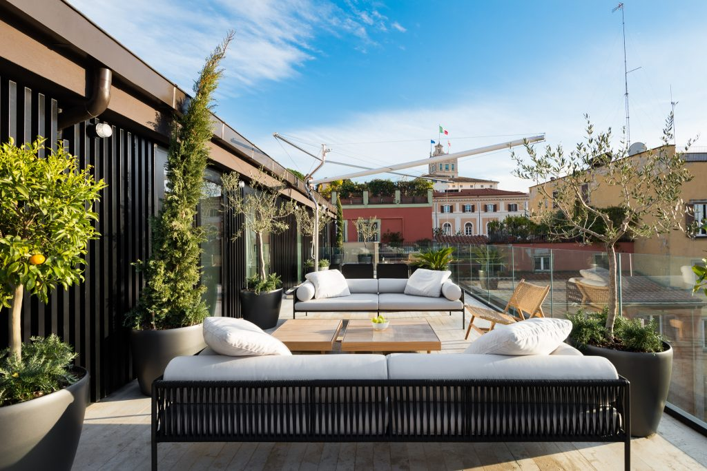
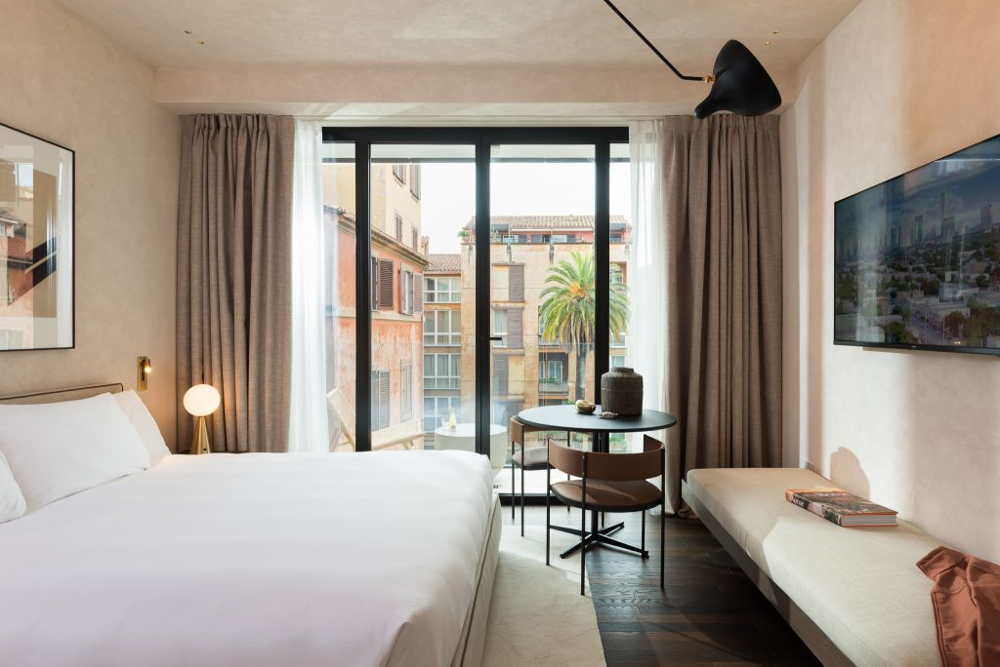
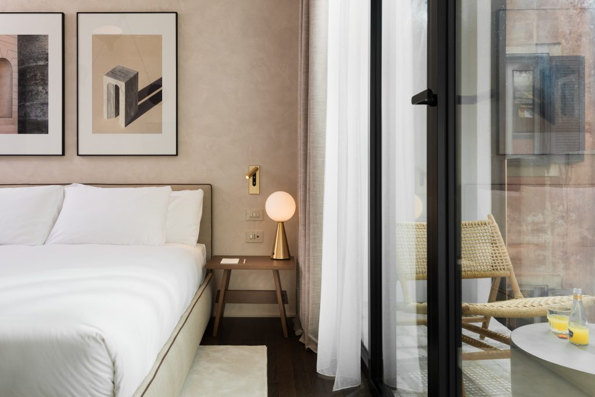
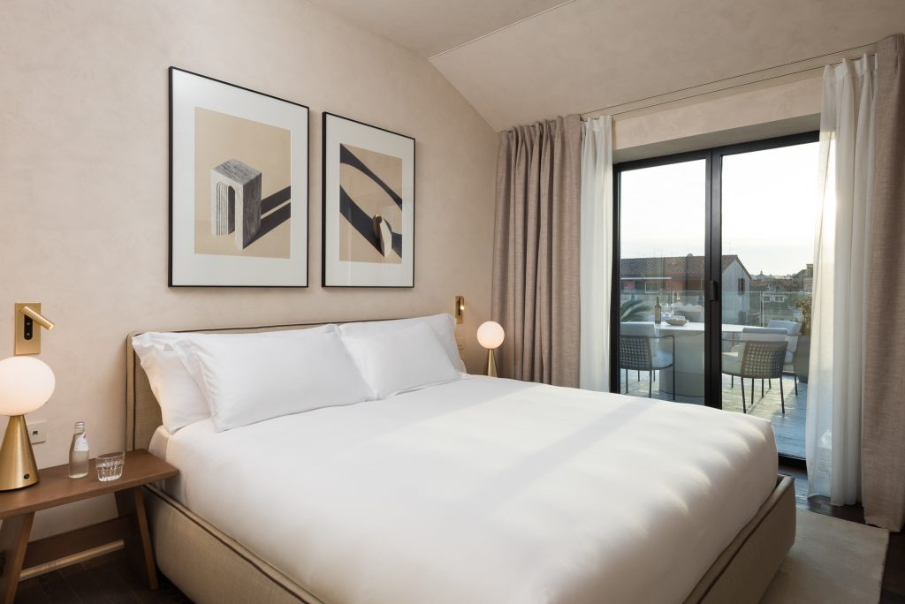

Via dei Maroniti 19, 00187 Roma, Italy · Map
Rome · Aparthotel
Located just steps away from the world-famous Trevi Fountain, master Trevi places you in the very heart of Rome's historic center. With the Spanish Steps, Pantheon, and Piazza Navona all within walking distance, you're perfectly situated to explore the city's most iconic landmarks. Whether it's the ancient ruins of the Roman Forum or the bustling atmosphere of Via del Corso, you'll find countless cultural and shopping opportunities right at your doorstep. master Trevi offers 27 thoughtfully designed apartments and studio apartments, blending modern minimalist aesthetics with Scandinavian-inspired interiors. Large, floor-to-ceiling windows flood each space with natural light, creating a fresh and inviting atmosphere.
Each apartment is equipped with a coffee machine, perfect for brewing your morning espresso before embarking on your Roman adventures. The fully equipped kitchens, complete with a dishwasher and refrigerator, make preparing and storing meals convenient and hassle-free. Unwind in the communal space, ideal for working, socializing, or simply relaxing. With additional amenities such as a laundry service, master Trevi provides everything you need for a comfortable and effortless stay in Rome.
27 apartments
At master Trevi, you’ll find 27 thoughtfully designed apartments, offering a blend of modern convenience and minimalist style. Some units feature balconies, while others provide generous terraces, perfect for taking in Rome’s captivating views.
Each apartment reflects a modern minimalist aesthetic, with sleek Scandinavian-inspired design elements that create a serene and contemporary atmosphere. The use of neutral tones and clean lines enhances the sense of space and calm. All apartments are equipped with high-speed Wi-Fi, air conditioning, a coffee maker, and a refrigerator, ensuring a comfortable and convenient stay. The apartments also feature a fully equipped kitchenette, offering added flexibility for preparing meals at home. Whether you're staying for a few nights or an extended visit, master Trevi's stylish and thoughtfully designed apartments provide the perfect blend of comfort and practicality.
From 170 EUR / night
From 200 EUR / night
From 195 EUR / night

From 195 EUR / night

From 260 EUR / night

From 275 EUR / night

From 360 EUR / night
Services & facilities
Relax and unwind at our Lounge Bar, offering a selection of light refreshments in a cozy atmosphere.
Enjoy the convenience of our on-site laundry services, making longer stays more comfortable and hassle-free.
The neighbourhood
Via dei Maroniti 19, 00187 Roma, Italy
The interactive map could not load. The address is Via dei Maroniti 19, 00187 Roma, Italy.
Via dei Maroniti 19, 00187 Roma, Italy
Experience the heart of Rome at master Trevi, just steps from the Trevi Fountain landmark. Our prime location puts you within easy walking distance of the Spanish Steps, Pantheon, and Piazza Navona, offering unparalleled access to the city’s rich history and vibrant culture. Enjoy the best of Roman sightseeing, dining, and shopping right at your doorstep.
Whether you’re a history enthusiast or a casual traveler, you’ll appreciate the ease of access to Rome’s most treasured sites. Stroll through charming cobblestone streets, indulge in the local culinary delights at nearby cafes and restaurants, or explore the city’s boutiques and galleries. With so much to see and do, master Trevi offers the perfect base for experiencing the magic of Rome.
What truly sets this location apart is its blend of history and modernity. You’re surrounded by ancient wonders while enjoying all the contemporary conveniences of the city, creating a seamless balance between Rome’s past and present.
Good to know
FAQ
master Trevi is a luxurious aparthotel that combines private living spaces with hotel-style services, including reception, housekeeping, and laundry facilities.
master Trevi suits business travellers, couples, solo guests and families seeking spacious accommodations with kitchen facilities in central Rome.
Yes. Rooms include workspace-friendly tables, high-speed Wi-Fi and easy access to central Rome and public transport for business stays.
Yes. Fully equipped kitchens, laundry facilities, and apartment-style layouts make it comfortable for extended stays.
Yes, complimentary high-speed Wi-Fi is provided throughout every apartment and all shared spaces.
Yes, there is a 24/7 on-site reception at master Trevi.
Yes, a modern elevator connects the lobby with every guest floor for step-free access.
Yes, an on-site laundry room with washing machines and dryers is available for guest convenience at master Trevi.
Apartments include tables suitable for remote work, and the communal space can also be used for working or relaxing.
The iconic Trevi Fountain is just a short, pleasant stroll away – located approximately 300 metres from the property.
Barberini station – Piazza Barberini– (Metro Line A) is roughly a five-minute walk away.
Yes, master Trevi arranges private transfers to and from both airports for an additional fee.
master Trevi is a ten-to-fifteen-minute drive from Roma Termini railway station, depending on traffic conditions.
No, there is no on-site parking; staff can recommend nearby public garages if required.
Yes! Both the Spanish Steps and Piazza di Spagna are just a short, pleasant stroll away – reachable in less than ten minutes.
Yes, assistance with booking taxis or providing information on local car rental services is available upon request.
Yes, our Getting Here section provides step-by-step directions from both airports via shuttle, train and Metro A to Barberini; for live timings, please consult Google Maps.
Studio (2 guests); Studio with Balcony (3); Large Studio Ground Level (4); Large Studio with Balcony (4); One-Bedroom Apartment with Big Terrace (4); Family Apartment with Balcony (5); Two-Bedroom Penthouse with Big Terrace (4); Three-Bedroom Penthouse with Big Terrace (6).
Each apartment features a fully equipped kitchen complete with a refrigerator; please note, however, that dishwashers are not provided.
Yes, selected units offer furnished balconies or spacious terraces overlooking Rome’s historic skyline.
Yes, every apartment features a high-quality Nespresso coffee machine, allowing you to enjoy a fresh brew at your convenience.
Yes, each apartment has individual controls; however, the system operates seasonally, switching between heating or cooling rather than both simultaneously.
Yes, hypo-allergenic bedding and additional pillows can be prepared upon advance request.
Yes, apartments include smart TVs that support streaming services like Netflix for guest entertainment.
Yes, a built-in laptop-size safe is fitted in every apartment for secure personal storage.
Yes, complimentary cribs can be provided on request, subject to availability.
A light daily refreshment service is provided for every apartment, while a full housekeeping service is done on the fourth day of the stay.
While we do not serve a full breakfast on-site, complimentary light refreshments are available for guests to enjoy in the lobby throughout the day.
Yes, the lounge bar welcomes guests with light snacks, coffee, wine and soft drinks.
Yes, each apartment is fully equipped with cookware, utensils and dishware.
Yes, an electric kettle and toaster are standard kitchen appliances in all apartments.
Yes, wine or chilled champagne can be ordered to the apartment upon guest request.
Yes, guests can order meals through local delivery apps in Rome. For smooth delivery, it is best to meet the courier at the main entrance.
The apartments are mainly self-catering, and master Trevi also has a Lounge Bar serving light snacks, coffee, wine, and soft drinks.
Check-in begins at 3:00 PM, while check-out is required by 11:00 AM
Yes, express check-out is available to streamline your departure.
Early check-in at master Trevi is subject to availability; guests are encouraged to contact the team in advance, and luggage can be stored if the apartment is not yet ready.
Yes, late check-out can be arranged in advance, subject to availability and a possible fee.
A valid government-issued photo ID is required at check-in.
Upon arrival, guests complete the check-in process with the service team in the lobby. Once completed, a code is provided for apartment entry and access to common areas such as the lobby, service rooms, and more.
Yes, complimentary secure luggage storage is offered for early arrivals and post-checkout departures.
The front entrance access code will be sent before arrival, and apartment entry details will be provided after you complete check-in with our team in the lobby. If you have not received the codes upon arrival, please contact us via WhatsApp (+39 06 9480 2445) or email (easytravelagency@trustagent.space).
Please contact the Guest Relations Team immediately via WhatsApp (+39 06 9480 2445) or email (easytravelagency@trustagent.space). A representative will verify your booking and assist.
Official invoices are issued at the end of the stay. To ensure your document is accurate, please provide any specific billing details or company information to our team prior to your check-out date. Unfortunately it is not possible to make changes to the invoice details after the invoice is issued.
Cancellation terms depend on the chosen rate: flexible bookings may be cancelled free of charge until the stated deadline, while non-refundable rates are prepaid and cannot be cancelled.
No security deposit is taken, but a valid credit card is required and may be pre-authorised for any damages or incidentals.
Yes, dogs are welcome free of charge; they must be trained, never left unattended, kept off furniture, and any damage is the guest’s responsibility.
All indoor spaces are strictly smoke-free. Guests are welcome to smoke in designated outdoor areas only, which include apartment balconies, the patio, and the front yard.
Yes, direct website bookings receive an automatic five-percent accommodation discount.
All stays must be pre-paid using the secure payment link provided. We exclusively accept card payments via this link and are unable to accept cash at the property.
Tax inclusion depends on your booking channel. Reservations made directly through the master Trevi website are all-inclusive of both VAT and the Rome city tax. For bookings made via third-party platforms (such as Booking.com or Expedia), city tax will be collected separately upon arrival.
Yes, the Pantheon is an easy 12-minute walk, approximately 1 kilometre away.
Yes, the master Trevi team can gladly arrange guided city tours and curated experiences.
Yes, master Trevi is perfectly positioned for fashion lovers. You’ll find the famous Via del Corso and its charming side streets just a short stroll away.
Yes, we provide concierge tips and curated recommendations for exploring the landmarks and hidden gems of the historic centre.
While you can take the Metro from Barberini (switching from Line A to Line B at Termini), the most convenient route is the direct bus. Catch Line 51 or 85 from the nearby Corso/Minghetti stop for a quick, 15-minute journey that brings you right to the Colosseum’s entrance.
No, master Trevi does not have an on-site gym; however, home-workout equipment can be provided upon request.
Walk to the Trevi Fountain, Spanish Steps, Pantheon, and Piazza Navona. Some of Rome’s finest trattorias and aperitivo bars are right outside master Trevi’s doorstep.
Gallery
Every photo of master Trevi. Tap any image to open it full size.
Save More, Stay More: Book Directly With master For A 5% Discount Today! — master Trevi